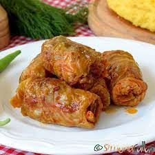

Sarmale

Descriere
Ingrediente
- 1 varza murata.
- 700 g carne de porc.
- 4-5 felii de costita de porc afumata.
- 2 linguri de orez.
- 1 ceapa mare.
- 5 linguri de bulion.
- 2 linguri ulei.
- 1 foaie dafin.
- Sare si piper.
- Marar si cimbru.
Preparare
- Pregatim foile de varza: daca varza este prea acra sau sarata, spalam frunzele in apa calduta.
- Tocam carnea.
- Adaugam ceapa tocata marunt si calita, orezul, putin piper macinat, cimbrul si mararul.
- Luam frunza de varza in mana si punem o linguta de carne pe latimea ei, astfel incat sa ne ramana putin spatiu la un capat ca sa o putem inchide.
- Punem cateva frunze de varza si costita de porc pe fundul oalei, apoi asezam sarmalele una langa alta.
- Le lasam la fiert o ora, apoi le punem la cuptor pentru 30 de minute.